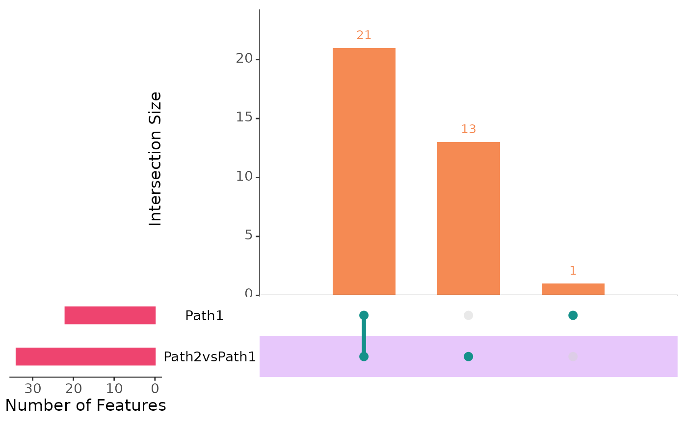

plotIntersect() draws an UpSet plot of the gene lists of sc.filter()
with UpSetR::upset(), which needs the suggested package UpSetR, or
returns its data.
plotIntersect(
scmpObj,
min_intersection_size = 1,
keep_empty_groups = FALSE,
width_ratio = 0.1,
show_sets_size = FALSE,
return = FALSE
)A ScMaSigPro object.
The smallest intersection drawn.
Whether to draw the empty intersections.
Not used.
Not used.
Whether to return the data instead of the plot.
An upset object of UpSetR or, with return = TRUE, a data frame
with one row per gene and a 0/1 column per gene list.
Conway JR, Lex A, Gehlenborg N (2017). UpSetR: an R package for the visualization of intersecting sets and their properties. Bioinformatics 33(18), 2938-2940. doi:10.1093/bioinformatics/btx364
Other plots:
plotBinTile(),
plotDiagnostics(),
plotTrend(),
plotTrendCluster()
data("scmp.ob", package = "scMaSigPro")
# The genes of each list as 0/1 columns
head(plotIntersect(scmp.ob, return = TRUE))
#> Path2vsPath1 Path1
#> Gene2 1 0
#> Gene3 1 1
#> Gene4 1 0
#> Gene9 1 1
#> Gene10 1 1
#> Gene15 1 1
if (requireNamespace("UpSetR", quietly = TRUE)) {
plotIntersect(scmp.ob)
}
#> Warning: `aes_string()` was deprecated in ggplot2 3.0.0.
#> ℹ Please use tidy evaluation idioms with `aes()`.
#> ℹ See also `vignette("ggplot2-in-packages")` for more information.
#> ℹ The deprecated feature was likely used in the UpSetR package.
#> Please report the issue at <https://github.com/hms-dbmi/UpSetR/issues>.
#> Warning: Using `size` aesthetic for lines was deprecated in ggplot2 3.4.0.
#> ℹ Please use `linewidth` instead.
#> ℹ The deprecated feature was likely used in the UpSetR package.
#> Please report the issue at <https://github.com/hms-dbmi/UpSetR/issues>.
#> Warning: The `size` argument of `element_line()` is deprecated as of ggplot2 3.4.0.
#> ℹ Please use the `linewidth` argument instead.
#> ℹ The deprecated feature was likely used in the UpSetR package.
#> Please report the issue at <https://github.com/hms-dbmi/UpSetR/issues>.
